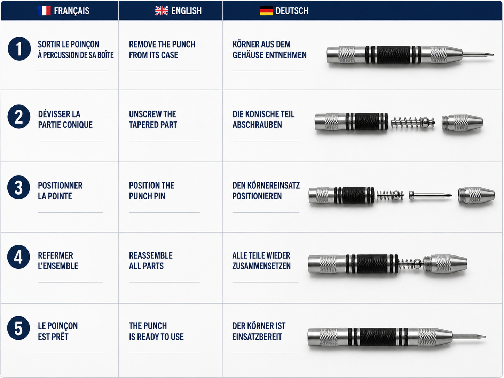
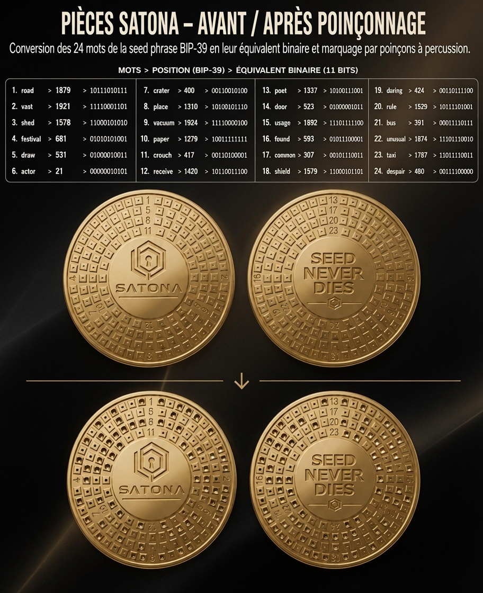

01
Convertir
Retrouvez l’équivalent binaire 11 bits de chaque mot de votre phrase de récupération.
Conservez impérativement l’ordre exact des mots.
Pour une utilisation réelle, privilégiez la liste BIP39 téléchargée et travaillez hors ligne.
MODE D’EMPLOI
4 étapes pour convertir, marquer, contrôler et protéger votre phrase de récupération.
Ne saisissez jamais votre phrase de récupération complète en ligne.
Pour une utilisation réelle, téléchargez la liste BIP39 et travaillez hors ligne.

Conservez toujours l’ordre original de votre phrase.
Chaque mot correspond à 11 cases.
01
Retrouvez l’équivalent binaire 11 bits de chaque mot de votre phrase de récupération.
Conservez impérativement l’ordre exact des mots.
Pour une utilisation réelle, privilégiez la liste BIP39 téléchargée et travaillez hors ligne.
02
Dévissez l’extrémité conique du poinçon automatique, insérez l’une des deux pointes fournies puis revissez l’ensemble.
Le poinçon est alors prêt à être utilisé.
Aucun marteau ni alimentation électrique n’est nécessaire.

03
Travaillez ligne par ligne, dans l’ordre exact de votre phrase de récupération.
Pour chaque bit à 0, laissez la case vide.

04
Avant de dissimuler votre plaque, vérifiez soigneusement chaque ligne.
Contrôlez la position du mot, son code binaire et les cases réellement marquées.
Une erreur de marquage peut empêcher une restauration correcte de votre portefeuille.
Ouvrir le visualiseur complet 24 mots →
Pour l’apprentissage et les mots d’exemple uniquement.
Conservez SATONA dans un endroit discret et sécurisé.
Évitez de photographier votre phrase de récupération ou d’en conserver une copie numérique non protégée.
Voir toutes les recommandations de sécurité →{kind=link}